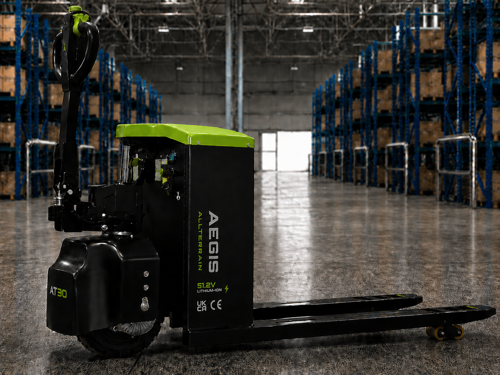

Commercial comparison
Why not just use a forklift?
The AT30 is a specialist rough-terrain, pedestrian-operated 3-tonne material mover built for the jobs where forklifts become oversized, expensive, or impractical.
Discuss your sitePositioning
A forklift cost-reduction tool, not another forklift.
The AT30 makes the most sense when you need heavy-duty movement in places where a full counterbalance forklift adds more cost, weight, space and complexity than the job requires.
Comparison visuals
Where the AT30 makes more sense.
Mobile offloading, compact yard movement and rough-surface handling without the cost or footprint of a forklift.

Mobile offloadAT30 travelling with delivery fleets where no forklift is onsite.

Tight turningCompact handling in narrow lanes, yards and storage areas.

Surface friendlyNo heavy counterweight crushing soft or sensitive surfaces.
No forklift licence required
Traditional forklifts bring formal operator training, refresher requirements, employer compliance and liability tracking. The AT30 is pedestrian-operated, helping teams move heavy materials with simpler site familiarisation and lower training friction.
Tail-lift and delivery vehicle friendly
The AT30 can travel with mobile delivery fleets, allowing drivers to unload heavy pallets on sites where no forklift is available.
Lower capital cost
A reliable forklift can require major capital spend, charging infrastructure, certification and ongoing servicing. The AT30 gives businesses 3-tonne movement capability without committing to a full forklift fleet.
Better in tight spaces
Forklifts need significant manoeuvring room. The AT30's compact pedestrian layout is better suited to narrow lanes, outbuildings, tight storage areas and constrained delivery environments.
Reduced ground and surface damage
Counterbalance forklifts rely on heavy rear counterweights, which can crack tarmac, stress paving and sink into soft ground. The AT30 provides material movement without that same heavy counterweight footprint.
Sales framing
How to explain it in one sentence.
Heavy-duty material movement without full forklift overhead.
3-tonne movement capability without committing to a full forklift fleet.
A more flexible tool for the jobs forklifts handle inefficiently.
Want to know if AT30 fits your operation?
Tell us what you move, where you unload, and what surface conditions you work on. We will help you decide whether the AT30, a forklift, or both make the most commercial sense.